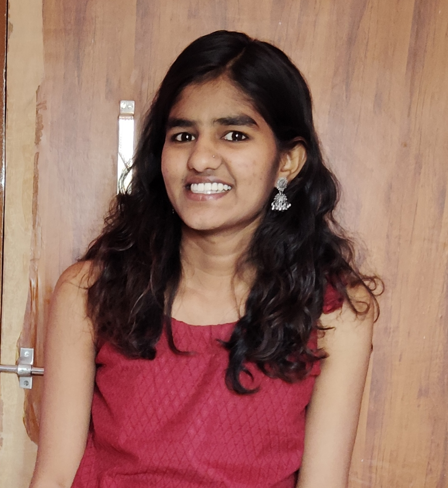

Chaya
Computer Science Student
Hubli, Karnataka
Email: chayasonder@gmail.com

CAREER OBJECTIVE
To obtain an opportunity where I can apply my technical knowledge, improve my programming skills and contribute to the development of useful software solutions.
EDUCATION
| Qualification | Institution | Year | Percentage / CGPA |
|---|---|---|---|
| B.Tech - Computer Science | KLE INSTITUTE OF TECHNOLOGY,HUBBALLI | 2024-2028 | 8.75(average of 4 sems) |
| PUC / 12th | SRI VIDYANIKETHAN PU COLLEGE,HAGARIBOMMANAHALLI | 2024 | 96% |
| SSLC / 10th | K C A ENGLISH MEDIUM HIGH SCHOOL,HARAPANAHALLI | 2022 | 98.72% |
TECHNICAL SKILLS
- Java
- Python
- C
- C++
- HTML
- CSS
- JavaScript
- SQL
- DBMS
- Data Structures and Algorithms
PROJECTS
Personal Portfolio Website
Developed a personal website using HTML, CSS, JavaScript and jQuery to display my profile, resume, bio-data and contact information.
TrackGuard AI
An AI-based railway fault and complaint intelligence system designed to identify track defects using computer vision and classify passenger complaints.
EcoSense - Smart Energy Analyzer
A smart energy analysis project designed to analyse electricity consumption, detect abnormal usage and provide energy-saving suggestions.
CERTIFICATIONS
- Microsoft Azure AI Fundamentals (AI-900)
- Basic Data Structures and Algorithms
- AI Promt Battle
SOFT SKILLS
- Communication
- Teamwork
- Problem-solving
- Willingness to learn
LANGUAGES KNOWN
- English
- Kannada
- Hindi
- Telugu
HOBBIES AND INTERESTS
- Dancing
- Listening to music
- Reading
- Exploring new places
CONTACT
Phone: +91 6361195115
Email: chayasonder@gmail.com
LinkedIn: https://www.linkedin.com/in/chaya-sonder-98b484359
GitHub: https://github.com/chayasonder